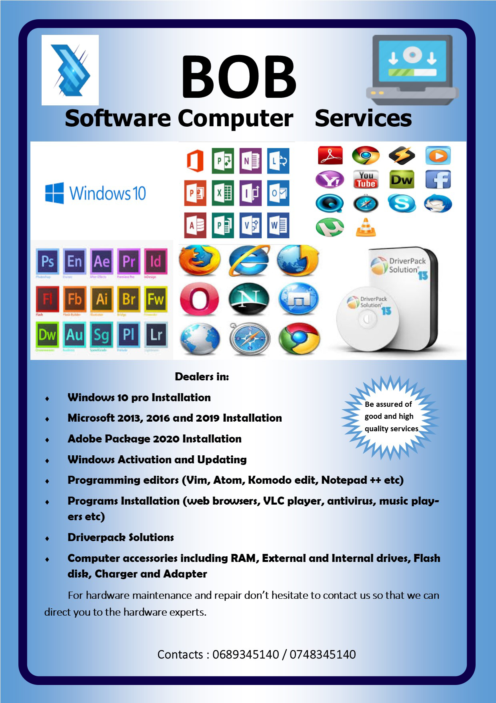
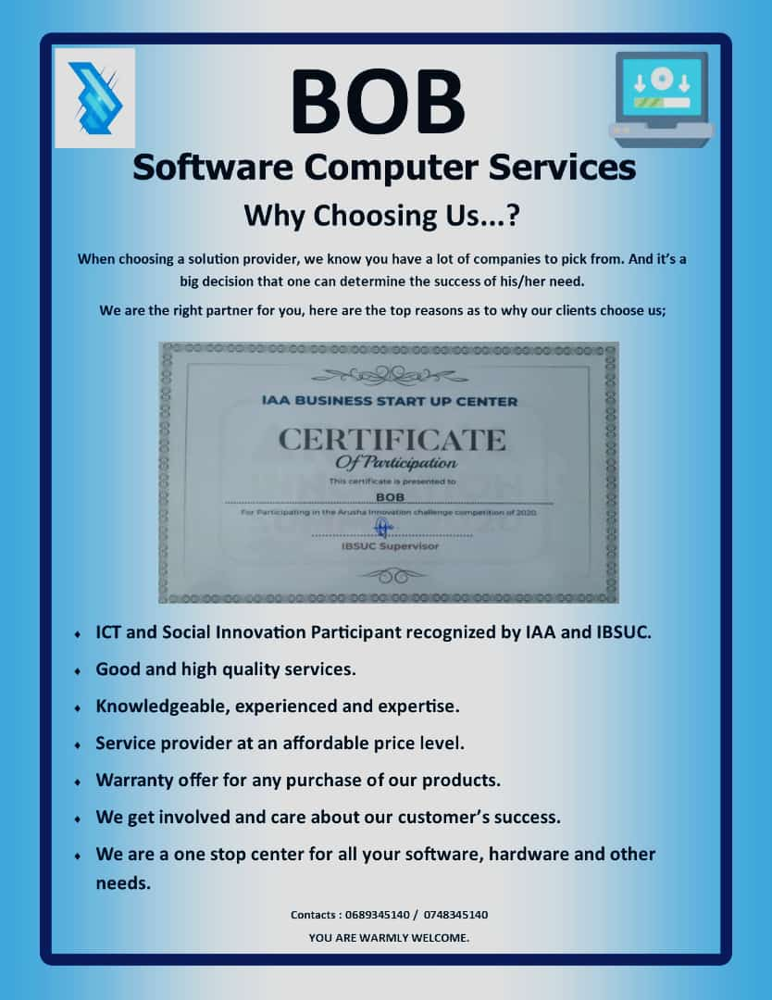

My name is Joseph Mwacha, but also people like to call be Bob or Bahath.
I was born on 4th of December 1999 as the second born in the family of Mr & Mrs Donald Joseph.
I am a young brother to Joachim but also a brother to Peace and Kindness.
Being a patriot citizen of my country, i have decided to establish this platform.
with the main aim of unifying the Tanzanians as well as the whole word in fighting and preventing the spread
of Corona virus. With this platform I am able to provide support to the citizens through provision
of basic and health needs that have been donated by the members, we also provide the appropiate
knowledge on what measures should be taken so as to avoid the spreading of this disease.
So its my pleasure to welcome you in supporting and helping our society.
2. Education Background
I began my Childhood education at Mount Meru Childhood School in Arusha from the year 2003 - 2005
thereafter I studied my Primary level of education at Kilimani Primary School in Arusha from the year 2005 - 2013
After completing my Primary level of education I later joined Amedeus Secondary School in Kilimanjaro from the year 2014 - 2019
and completed my Advanced Secondary education at Kerege High School located at Bagamoyo in the year 2020.
Recently I am a student from the University of Dar-es-Salaam persuing my first year degree in Bachelor of Science in Business Information & Technology
3. Leadership Skills
I am specialized and well experienced in matters concerning with leadership,
I have occupied various leadership positions including Environmrntal Minister at Chama High School from 2019 - 2020,
The Chairman of Marian Charity Community consisting of three regions Dar-es-Salaam, Arusha, Kilimanjaro and Mwanza The Children guardian at St Fransis Community,
Furthermore besides leadership I am a specialist in Learning and Development, Public Speaking, Conference Management
Moderator and a facilitator of becoming a Corporate and keynote figure.
5. My Career
Recently, I am a self employed man, The owner of BOB firm dealing with Software Computer Services,
buying and selling of computer and its hardware and software devices including mouse, keyboard, adapter, and disk drives
The firm deals also with the supply of academic materials for Advanced and Ordinary Schools. As it can be depicted on
the images below explaining what am I dealing with and why should you choose working with I.


6. IT Experience
Being an upcoming specialist in IT, I have an experience in this field in more than two years,
Within these two years I have managed to participate in various Information and Technological innovations
including Arusha Innovation Competition, African Code Week, and AIRTEL Bootcamp Strap
I believe in the power of Information and Technology that will play a big role in the coming days.